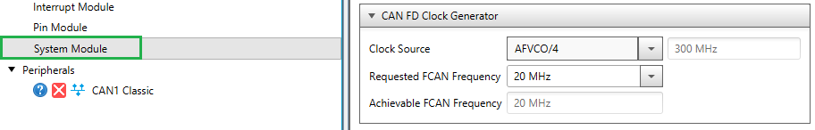
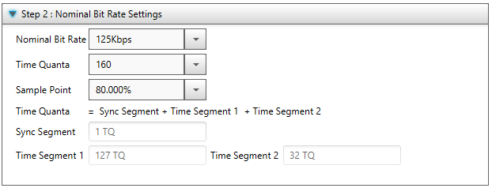

| Summary: | The Clock Frequency(FCAN) is to be configured in System Module as part of CAN-FD Clock Generator Block. Based on the desired Clock Source and the Requested FCAN frequency, MCC will configure registers automatically to achieve the Requested FCAN frequency. The Achievable FCAN frequency is calculated based on the formula : FCAN = Selected Clock Source Frequency / Prescaler The Achievable FCAN frequency is the closest frequency to Requested FCAN frequency that can be attained based on the selected Clock Source and the available Prescaler options supported by the device. |
| Summary: | 1) The combination of Clock Frequency(FCAN) and selected Nominal Bit Rate(NBR) is used to calculate a list of valid Time Quanta's. The formula applied is :Time Quanta = FCAN/(NBR*(1+BRP)) { Only integral values of Time Quanta and BRP(Baud Rate Prescaler are valid)} 2) By default , MCC will configure the maximum Time Quanta which in turn corresponds to minimum BRP value as is recommended for CAN FD module. 3) Based on the set Time Quanta , a list of valid Sample Points are obtained. 4) The combination of Time Quanta and Sample Point is used to determine the Time Segment values.Along with this ,MCC also configures a valid SJW value in the background based on the above parameters. |
| Summary: | Please ensure that the CAN Bus pins are always configured ,inability to do so may result in code being stuck in transition from Configuration Mode to other operating modes. |